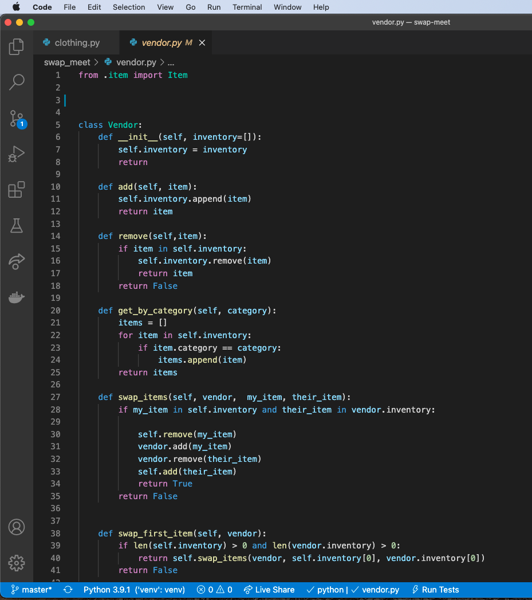

      <!-- ************ PROJECTS / PORTFOLIO  ************** -->
      <section class="projects">
        <div class="content-wrap divider">
          <h2>Featured Projects</h2>
          <p>View selected projects below. More information can be found at <a href="https://github.com/julianadecarvalho">Juliana's Github Repo</a>.</p>

          <!-- Project 1 -->
          <section class="project-item">
            
            <h3>Swap Meet Project</h3>
            <p>Developed a virtual swap meet for the vendor and customer, while keeping track of inventory and rating systems.</p>
            <a class="btn" href="https://github.com/julianadecarvalho/swap-meet" target="_blank">GitHub Repo</a>
          </section>
